전자기사 (2006-09-10 기출문제)
1과목: 전기자기학
1. 진공 중에서 정전용량이 C0 [F]인 평행판콘덴서에 그림과 같이 판면적의 2/3에 비유전률 εS인 에보나이트판을 삽입하면 콘덴서의 정전용량은 몇 F가 되는가?
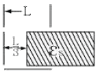
- C0/3
- 2εSC0/3
- 2εSC02
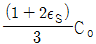
(정답률: 알수없음)

2. 진공 중에 서로 떨어져 있는 두 도체 A, B 가 있다. 도체 A에만 1C의 전하를 줄 때 도체 A, B 의 전위가 각각 3V와 2V 이었다. 지금 A, B 에 각각 2C 및 1C 의 전하를 주면 도체 A의 전위는 몇 V인가?
- 8
- 9
- 10
- 11
(정답률: 알수없음)
3. 콘덴서 간에 유전율 10-10 [F/m], 도전율 5×10-6 [℧/m]인 도전성 물질이 있을 때 정전용량이 10㎌ 이라면 콘덕턴스는 몇 ℧ 인가?
- 0.5
- 1
- 1.5
- 2
(정답률: 알수없음)
4. ∇ × (∇ρ) = cur1(gradρ)의 값은?
- 0
- -1
- 1
- ρ
(정답률: 알수없음)
5. 정전용량이 각각 C1, C2, 그 사이의 상호유도계수가 M인 절연된 두 도체가 있다. 두 도체를 가는 선으로 연결할 경우, 그 정전용량은 어떻게 표현되는가?
- C1 + C2 - M
- C1 + C2 + M
- C1 + C2 + 2M
- 2C1 + 2C2 + M
(정답률: 알수없음)
6. 전하 q[C]이 공기 중의 자계 H[AT/m]에 수직 방향으로 v[m/s]의 속도로 돌입하였을 때 받는 힘은 몇 N 인가?
- μ0qvH
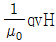
- qvH
- qH/μ0v
(정답률: 알수없음)
7. 다음 중 상자성체는?
- 철(Fe)
- 코발트(Co)
- 백금(Pt)
- 니켈(Ni)
(정답률: 알수없음)
8. 진공 중에서 전기쌍극자 M, M으로부터 임의의 점 P까지의 거리 r, M 과 r 이 이루는 각을 θ라 하면 P 점에서 전계의 r 방향성분 Er과 θ 방향성분 Eθ 는?
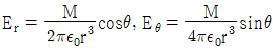
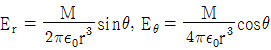
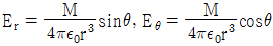
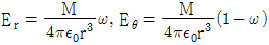
(정답률: 알수없음)
9. 반지름 a[m]인 2개의 원형 선조 루프가 ±Z 축상에 그림과 같이 놓여진 경우 I[A] 의 전류가 흐를 때 원형전류 중심축상의 자계 Hz [A/m] 는? (단, az, aø는 단위벡터이다.)
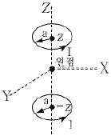
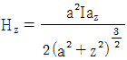
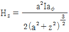
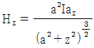
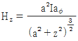
(정답률: 알수없음)
10. 반지름이 a[m]이고, 두께 t[m]인 원판도체의 외부와 내부에 전하밀도 +σ[C/m2], -σ[C/m2]의 전하가 균일하게 분포되어 있다. 원판의 중심축상에서 중심으로부터 d[m]의 거리에 있는 점 P 의 전위는 몇 V 인가?
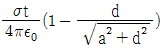
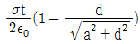
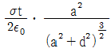
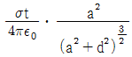
(정답률: 알수없음)
11. 전위함수 V = x2 + y2 [V]일 때 점(3,4)[m]에서의 등전위선의 반지름은 몇 m 이며, 전력선방정식은 어떻게 되는가?
- 등전위선의 반지를 : 3, 전력선 방정식 :
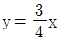
- 등전위선의 반지를 : 4, 전력선 방정식 :
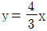
- 등전위선의 반지를 : 5, 전력선 방정식 :
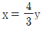
- 등전위선의 반지를 : 5, 전력선 방정식 :
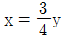
(정답률: 알수없음)
12. 강자성체의 자속밀도 B의 크기와 자화의 세기 J의 크기 사이에는 어떤 관계가 있는가?
- J는 B와 같다.
- J는 B보다 약간 작다.
- J는 B보다 약간 크다.
- J는 B보다 대단히 크다.
(정답률: 알수없음)
13. 다음 식 중 틀린 것은?
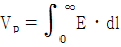
- E = -grad V
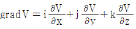
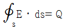
(정답률: 알수없음)
14. E = (i + j2 + k3)[V/㎝] 로 표시되는 전계가 있다. 0.01μC의 전하를 원점으로부터 i3[m]로 움직이는데 필요한 일은 몇 J 인가?
- 3×10-8
- 3×10-7
- 3×10-6
- 3×10-5
(정답률: 알수없음)
15. Ωㆍsec와 같은 단위는?
- F
- F/m
- H
- H/m
(정답률: 알수없음)
16. 대전된 도체의 표면 전하밀도는 도체표면의 모양에 따라 어떻게 되는가?
- 곡률반경이 크면 커진다.
- 곡률반경이 크면 작아진다.
- 표면모양에 관계없다.
- 평면일 때 가장 크다.
(정답률: 알수없음)
17. 수직편파는?
- 대지에 대해서 전계가 수직면에 있는 전자파
- 대지에 대해서 전계가 수평면에 있는 전자파
- 대지에 대해서 자계가 수직면에 있는 전자파
- 대지에 대해서 자계가 수평면에 있는 전자파
(정답률: 알수없음)
18. 그림에서 전계와 전속밀도의 분포 중 맞는 것은? (단, 경계면에 전하가 없는 경우이다.)
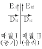
- E11 = 0, Dn1 = ρs
- E12 = 0, Dn2 = ρs
- E11 = E12, Dn1 = Dn2
- E11 = E12 = 0, Dn1 = Dn2 = 0
(정답률: 알수없음)
19. 자장 내에 전하가 받는 힘에 대한 설명이 틀린 것은?
- 자장에 전하의 이동속도에 따른 힘이 존재한다.
- 자장에 놓여 진 도선전류가 흐르면 도선이 힘을 받는다.
- 자장 내 전하가 받는 힘은 렌츠(Lentz)의 법칙에 따른다.
- 전계와 자계가 공존하는 공간에서 전하가 받는 힘을 로렌츠(Lorentz)힘으로 표현된다.
(정답률: 알수없음)
20. 단면적 s[m2], 단위 길이에 대한 권수가 n[회/m]인 무한히 긴 솔레노이드의 단위 길이당의 자기인덕턴스는 몇 H/m인가?
- μㆍsㆍn
- μㆍsㆍn2
- μㆍs2ㆍn2
- μㆍs2ㆍn
(정답률: 알수없음)
2과목: 회로이론
21. 다음 중 e-atsinωt 의 라플라스 변환은?
- S + a/(S + a)2 + ω2
- ω/(S - a)2 + ω2
- ω/(S + a)2 + ω2
- ω/(S + a) + ω
(정답률: 알수없음)
22. t의 함수 f(t)가 f(t) = f(-t)의 조건을 만족할 때 f(t)는?
- 기함수
- 우함수
- 정현대칭함수
- 복소함수
(정답률: 알수없음)
23. 그림과 같은 4단자 회로망의 임피던스 파라미터 Z11 은?
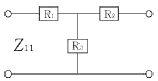
- Z11 = R1 + R3
- Z11 = R2 + R3
- Z12 = -R3
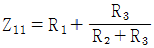
(정답률: 알수없음)
24. 정 K형 저역통과 필터의 공칭 임피던스는?
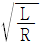
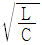
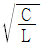
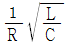
(정답률: 알수없음)
25. 임피던스 함수
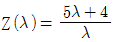
로 표시되는 2단자 회로망을 도시하면?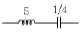
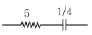
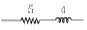
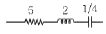
(정답률: 알수없음)
26. 전기회로에서 일어나는 과도현상과 시정수와의 관계를 옳게 표현한 것은?
- 과도현상과 시정수와는 관계가 없다.
- 시정수가 클수록 과도현상은 빨리 사라진다.
- 시정수의 역이 클수록 과도현상은 빨리 사라진다.
- 시정수의 역이 클수록 과도현상이 오래 지속 된다.
(정답률: 알수없음)
27. 내부저항 r[Ω]인 전원이 있다. 부하 R에 최대 전력을 공급하기 위한 조건은?
- r = 2R
- R = r
- R = r2
- R = r3
(정답률: 알수없음)
28. R = 20[Ω], L = 0.⑤[H], C = 1[㎌]인 RLC 직렬회로에서 Q는 약 얼마인가?
- 25.2
- 17.2
- 15.2
- 11.2
(정답률: 알수없음)
29. 최대 눈금이 50[V]인 직류 전압계가 있다. 이 전압계를 사용하여 150[V]의 전압을 측정하려면 배율기의 저항은 몇 [Ω]을 사용하여야 하는가? (단, 전압계의 내부 저항은 5000[Ω]이다.)
- 10000
- 15000
- 20000
- 25000
(정답률: 알수없음)
30. 다음 중 파형의 대칭성에 해당 되지 않는 것은?
- 우함수
- 기함수
- 고조파 대칭
- 반파 대칭
(정답률: 알수없음)
31. R-L-C 직렬회로가 유도성 회로일 때의 설명이 옳은 것은?
- 전류는 전압보다 뒤진다.
- 전류는 전압보다 앞선다.
- 전류와 전압은 동위상이다.
- 공진이 되어 지속적으로 발진한다.
(정답률: 알수없음)
32. 필터의 차단 주파수는 출력 전압이 입력 전압의 몇 배인 주파수로 정의하는가?
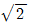
배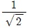
배- 1/2배
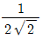
배
(정답률: 알수없음)
33. “회로망 중의 임의의 폐회로에 있어서 그 각지로(枝路)의 전압 강하의 총합은 그 폐회로 중의 기전력의 총 합과 같다.” 이와 관계되는 법칙은?
- 플레밍의 법칙
- 렌쯔의 법칙
- 패러데이의 법칙
- 키르히호프의 법칙
(정답률: 알수없음)
34. 원점을 지나지 않는 원의 역 궤적은?
- 원점을 지나는 원
- 원점을 지나는 직선
- 원점을 지나지 않는 원
- 원점을 지나지 않는 직선
(정답률: 알수없음)
35. 다음 설명 중 옳은 것은?
- 루프 해석법과 절점 해석법은 망로 해석법과는 달리 비평면 회로에 대해서도 적용될 수 있다.
- 루프 해석법과 망로 해석법은 절점 해석법과는 달리 비평면 회로에 대해서만 적용될 수 있다.
- 루프 해석법과 망로 해석법 및 절점 해석법 모두 비평면 회로에 대해서도 적용될 수 있다.
- 루프 해석법과 절점 해석법은 망로 해석법과는 달리 평면 회로에 대해서만 적용될 수 있다.
(정답률: 알수없음)
36. 그림과 같은 정 K형 필터가 있다고 할 때, 이 필터는?
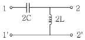
- 중역 필터
- 대역 필터
- 저역 필터
- 고역 필터
(정답률: 알수없음)
37. R-L-C 직렬회로에서 과도현상의 진동이 일어나지 않을 조건은?
- (R/2L)2 - 1/LC ＞ 0
- (R/2L)2 - 1/LC ＜ 0
- (R/2L)2 = 1/LC
- R/2L = 1/LC
(정답률: 알수없음)
38. 시간 t에 대하여 그림과 같은 파형의 전류가 20[Ω] 저항에 흐를 때 소비전력이 100[W]이다. 이 전류를 가동 코일형 계기로 측정하면 약 몇 [A]를 나타내겠는가?
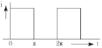
- 0.79[A]
- 1.58[A]
- 2.24[A]
- 3.16[A]
(정답률: 알수없음)
39. 자계 코일에 권수 N = 2000회, 저항 R = 6Ω에서 전류 I = 10A 가 통과하였을 경우 자속 ø = 6×10-2 Wb 이다. 이 회로의 시정수는 몇 sec 인가?
- 1
- 2
- 10
- 12
(정답률: 알수없음)
40. 두 코일 간의 유도 결합의 정도를 나타내는 결합계수 K에 대한 설명으로 옳지 않은 것은?
- K=1은 상호 자속이 전혀 없는 경우이다.
- K=0은 유도 결합이 전혀 없는 경우이다.
- K=1은 누설 자속이 전혀 없는 경우이다.
- 결합계수 K는 0과 1 사이의 값을 갖는다.
(정답률: 알수없음)
3과목: 전자회로
41. 다음 Karnaugh 도로 된 함수를 최소화 하면?
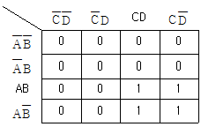
- AB
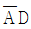
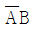
- AC
(정답률: 알수없음)
42. 다음 중 직렬 전류 궤환 증폭기의 궤환 신호 성분은?
- 전압
- 전류
- 전력
- 임피던스
(정답률: 알수없음)
43. 배타적 OR(Exclusive OR)와 AND gate의 기능을 동시에 갖는 회로는?
- 플립플롭 회로
- 래치 회로
- 전 가산기 회로
- 반 가산기 회로
(정답률: 알수없음)
44. 다음 중 PLL 회로의 구성요소가 아닌 것은?
- Phase detector(위상 검파기)
- HPF(고역 통과 필터)
- VOD(전압 제어 발전기)
- Reference Oscillator(기준발진기)
(정답률: 알수없음)
45. 트랜지스터의 컬렉터 누설 전류가 주위 온도 변화로 20μA에서 150μA로 증가할 때 컬렉터 전류가 1mA에서 1.2mA로 되었다면 안정도 S는 약 얼마인가?
- 1.5
- 1.8
- 2.0
- 2.2
(정답률: 알수없음)
46. 다음 B급 푸시풀(Push-Pull) 증폭기의 특징이 아닌 것은?
- 차단 상태 부근에 바이어스 되어 있다.
- 트랜지스터의 비선형 특성에서 오는 일그러짐이 증가 한다.
- 우수 고조파가 상쇄되어 일그러짐이 적다.
- B급이다, AB급으로 동작시킨다.
(정답률: 알수없음)
47. 2진 디지털 부호에 따라서 반송파의 위상이 두 가지로 천이 되도록 하는 변조방식은?
- PSK 방식
- FSK 방식
- ASK 방식
- DPCM 방식
(정답률: 알수없음)
48. 저주파 전력 증폭기의 출력 측 기본파 전압이 100[V], 제2 및 제3 고조파 전압이 각각 4[V]와 3[V]이면 이 경우의 왜율은?
- 5%
- 10%
- 15%
- 20%
(정답률: 알수없음)
49. 다음 이상적인 연산증폭기의 특성이 아닌 것은?
- 온도에 대하여 드리프트(drift)가 없는 특성을 가진다.
- 대역폭(BW) = 0
- 출력 저항(Ro) = 0
- 전압이득 lAvl = ∞
(정답률: 알수없음)
50. 그림에서 A는 반전 연산 증폭기이다. V1 - V0의 관계는?
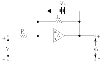
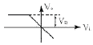
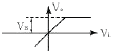
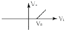
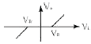
(정답률: 알수없음)
51. 그레이 코드(Gray code) 1111을 2진수로 변환하면?
- 1110
- 1010
- 1011
- 1111
(정답률: 알수없음)
52. 그림과 같은 논리회로를 간소화 하면?
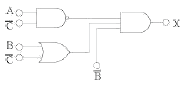
- X = A + B + C
- X = B + C
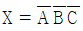
- X = ABC
(정답률: 알수없음)
53. 다음 중 연산증폭기의 응용 회로가 아닌 것은?
- 적분 증폭기
- 미분 증폭기
- 아날로그 가산증폭기
- 디지털 반가산증폭기
(정답률: 알수없음)
54. 다음 표는 부궤환에 의한 입ㆍ출력 임피던스의 변화이다. ( )안의 보기 내용 중 옳지 않은 것은?
- ① 증가
- ② 감소
- ③ 감소
- ④ 증가
(정답률: 알수없음)
55. 연산증폭기(op amp.)와 다이오드로 구성된 다음 그림과 같은 회로의 명칭은?
- 진폭제한회로
- 반파정류회로
- 전파정류회로
- 정현파-삼각파 변환회로
(정답률: 알수없음)
56. 다음 중 Exclusive OR 회로에 대한 논리식이 아닌 것은? (단, Y는 출력이고, A와 B는 입력임)
- Y = A⊕B
(정답률: 알수없음)
57. 다음 그림의 회로에서 Re의 중요한 역할은?
- 동작점의 안정화
- 주파수 대역폭 증대
- 바이어스 전압감소
- 출력증대
(정답률: 알수없음)
58. 다음 중 가장 적당한 고주파 전력 증폭기는?
- A급 증폭기
- B급 증폭기
- C급 증폭기
- AB급 증폭기
(정답률: 알수없음)
59. 전원 정류회로의 리플 함유율을 적게 하는 방법으로 옳지 않은 것은?
- 입력측 평활용 콘덴서 정전 용량을 크게 한다.
- 평활용 초크 코일의 인덕턴스를 크게 한다.
- 출력측 평활용 콘덴서를 정전 용량을 작게 한다.
- 교류 입력전원의 주파수를 높게 한다.
(정답률: 알수없음)
60. 다음 중 고주파 트랜지스터에서 fα 와 fβ 의 관계식은? (단, α0 : CB의 저주파 단락 전류 증폭률, β0 : CE의 저주파 단락 전류 증폭률)
- fs = β0ㆍfα
- fs = (1+α0)ㆍfα
- fβ = fα(1-β0)
(정답률: 알수없음)
4과목: 물리전자공학
61. 다음 중 플라즈마(Plasma)와 같은 기체 상태의 경우 적용될 수 있는 분포식은?
- Schro dinger 방정식
- Maxwell-Boltzmann
- 1차원의 Poisson 방정식
- Einstein 관계식
(정답률: 알수없음)
62. 반도체 재료의 제조시 고유저항 측정을 가끔 하는 이유는?
- 다결정 재료의 수명 시간을 결정하기 때문
- 진성 반도체의 캐리어 농도를 결정하기 때문
- 불순물 반도체의 캐리어 농도를 결정하기 때문
- 캐리어의 이동도를 결정하기 때문
(정답률: 알수없음)
63. 다음 중 홀(hall) 효과와 가장 관계가 깊은 것은?
- 고저항 측정기
- 전류계
- 자장계
- 분압계
(정답률: 알수없음)
64. 금속 표면에 빛을 조사하면 금속 내의 전자가 방출하는 현상은?
- 열전자 방출
- 냉음극 방출
- 2차 전자 방출
- 광전자 방출
(정답률: 알수없음)
65. 평행판 A, B 사이의 거리가 1[㎝]이며, 판 B에 대한 판 A의 전위는 +100[V]이다. 초기속도 0으로 판 B를 출발한 전자가 판 A에 도달하는데 걸리는 시간은 약 몇 [sec]인가?
- 3.37×10-7
- 1.69×10-7
- 1.69×10-8
- 3.37×10-9
(정답률: 알수없음)
66. 트랜지스터가 차단 영역에 있을 때 접합 면에 걸리는 전압은?
- EB 접합 : 정바이어스, CB 접합 : 정바이어스
- EB 접합 : 정바이어스, CB 접합 : 역바이어스
- EB 접합 : 역바이어스, CB 접합 : 역바이어스
- EB 접합 : 역바이어스, CB 접합 : 정바이어스
(정답률: 알수없음)
67. 다음 중 물질을 구성하는 요소가 아닌 것은?
- 전자
- 양성자
- 중성자
- 쌍극자
(정답률: 알수없음)
68. 다음 설명 중 옳지 않은 것은?
- 진성반도체에서 전자의 밀도와 정공의 밀도는 같다.
- 불순물 반도체의 고유저항은 진성반도체의 고유저항 보다 크다.
- 열적 평형상태에서 전자와 정공의 열적 생성과 재격합률은 같다.
- 캐리어의 재결합률은 전자와 홀의 농도에 비례한다.
(정답률: 알수없음)
69. 다음 에너지 대역에 대한 설명으로 옳지 않은 것은?
- 전도대와 가전자대 사이 영역을 금지대라 한다.
- 원자간 거리가 멀어져 고립되면 에너지 준위의 갈라짐이 발생한다.
- 가전자로 채워져 있는 허용 에너지대를 가전자대라 한다.
- 금지 대역폭(energy band gap)의 크기에 따라 도체, 반도체, 절연체로 구분한다.
(정답률: 알수없음)
70. 다음 중 캐리어의 확산 거리에 대한 설명으로 옳은 것은?
- 확산계수와는 무관하다.
- 캐리어의 이동도에만 관계있다.
- 캐리어의 수명시간에만 관계있다.
- 캐리어의 수명시간과 이동도에 관계있다.
(정답률: 알수없음)
71. 다음 중 Pauli 배타율 원리가 만족되는 분포 함수는?
- Maxwell-Boltzmann
- Fermi-Dirac
- Schro dinger
- Einstein
(정답률: 알수없음)
72. 다음 중 에피텍셜(epitaxial) 성장이란?
- 다결정의 Ge 성장
- 다결정의 Si 성장
- 기판에 매우 얇은 단결정의 성장
- 기판에 매우 얇은 다결정의 성장
(정답률: 알수없음)
73. Si P-N 다이오드에서의 cut-in 전압은 약 얼마인가?
- 0V
- 0.7V
- 7V
- 70V
(정답률: 알수없음)
74. 다음 중 반도체의 저항이 온도에 의해 변화하는 소자는?
- Thermistor
- SCR
- TRIAC
- DIAC
(정답률: 알수없음)
75. 다음 중 페르미-디락(Fermi-Dirac)의 분포함수는?
- f(E) = 1+e(E-E1)/KT
- f(E) = 1/(1+e(E-E1)/KT)
- f(E) = 1-e(E-E1)/KT
- f(E) = 1/(1-e(E-E1)/KT)
(정답률: 알수없음)
76. 전자의 운동량(P)과 파장(λ) 사이의 드브로이(DeBroglie) 관계식은? (단, h 는 Plank 상수)
- P = λh
- P = h/λ
- P = λ/h
- λ = 1/Ph
(정답률: 알수없음)
77. 금속체 내에 있는 전자가 표면장벽을 넘어서 금속 밖으로 방출되기 위하여 필요한 최소의 에너지를 가리키는 것은?
- 광 에너지
- 운동 에너지
- 페르미 준위
- 일 함수
(정답률: 알수없음)
78. 다음 중 이동도(μ)의 단위로 옳은 것은?
- cm/Vㆍs
- cm2/Vㆍ-s
- cm2/s
- cm/s
(정답률: 알수없음)
79. 낙뢰와 같이 급격한 서지 전압(Surge Voltage)으로부터 회로를 보호하기 위하여 전원이 인가되는 초단에 주로 사용되는 소자는?
- 서미스터
- 바리스터
- 쇼트키 다이오드
- 제너 다이오드
(정답률: 알수없음)
80. 전자가 외부의 힘(열, 빛, 전장)을 받아 핵의 구속력으로부터 벗어나 결정 내를 자유로이 이동할 수 있는 자유전자의 상태로 존재하는 에너지대는?
- 충만대(filled band)
- 가전자대(valence band)
- 전도대(conduction band)
- 금지대(forbidden band)
(정답률: 알수없음)
5과목: 전자계산기일반
81. 10진 카운터(counter) 회로를 설계하기 위해서 몇 개의 단으로 구성해야 되는가?
- 2단
- 4단
- 8단
- 10단
(정답률: 알수없음)
82. 다음 중 어드레싱(addressing) 방법이 아닌 것은?
- direct addressing
- indirect addressing
- relative addressing
- temporary addressing
(정답률: 알수없음)
83. 다음 중 명령 fetch에 대한 동작 순서가 옳은 것은?
(정답률: 알수없음)
84. 다음 중 어드레싱 모드(addressing mode)에서 현재의 명령어 번지와 프로그램 카운터의 합으로 표시되는 방식은?
- direct addressing mode
- indirect addressing moded
- absolute addressing mode
- relative addressing mode
(정답률: 알수없음)
85. 컴퓨터에서 물리적인 메모리 주소에 가상 메모리 주소를 배정하는 기법을 무엇이라 하는가?
- interrupt
- mapping
- merging
- overlapping
(정답률: 알수없음)
86. 다음 중 순서도(Flow chart)작성 시 장점에 속하지 않는 것은?
- 코딩하기가 쉽다.
- 분석과정이 명료해 진다.
- 라인 프린터의 속도가 신속하다.
- 논리적 오차나 불합리한 점을 쉽게 발견할 수 있다.
(정답률: 알수없음)
87. 다음 논리식을 간략화 한 것으로 옳은 것은?
- A(B+C)
- (A+B)C
- 1
- A+B+C
(정답률: 알수없음)
88. 다음 중 소프트웨어적으로 인터럽트의 우선 순위를 결정하는 인터럽트 형식은?
- 폴링 방법에 의한 인터럽트
- 벡터 방식에 의한 인터럽트
- 수퍼바이저 콜에 의한 인터럽트
- 데이지체인 방법에 의한 인터럽트
(정답률: 알수없음)
89. 다음 중 자기 보수성(Self-Complement)의 특징을 갖고 있는 코드는?
- Excess-3 code
- Gray code
- BCD code
- Parity code
(정답률: 알수없음)
90. 다음 보기의 연산은?
- MOVE 연산
- Complement 연산
- AND 연산
- OR 연산
(정답률: 알수없음)
91. 채널(channel)의 종류가 아닌 것은?
- counter channel
- selector channel
- multiplexer channel
- block multiplexer channel
(정답률: 알수없음)
92. 숫자나 문자 등의 키보드(Keyboard) 입력을 2진 코드로 부호화하는데 사용될 수 있는 소자는?
- 인코더(Encoder)
- 디코더(Decoder)
- 멀티플렉서(Multiplexer)
- 디멀티플렉서(Demultiplexer)
(정답률: 알수없음)
93. 흐름도(flowchart) 기호와 그 용도의 관계가 옳지 않은 것은?
- : 각종 처리되는 작용
- : 일반적인 입ㆍ출력 작용
- : 비교, 판단
- : 흐름의 중단된 부분 연결
(정답률: 알수없음)
94. 중앙처리장치의 주요기능에 대한 내용 중 옳지 않은 것은?
- 기억기능-레지스터(register)
- 연산기능-연산기(ALU)
- 전달기능-누산기(accumulator)
- 제어기능-조합회로와 기억소자
(정답률: 알수없음)
95. 연산자(operation)의 기능에 속하지 않는 것은?
- 기억 기능
- 제어 기능
- 전달 기능
- 함수연산 기능
(정답률: 알수없음)
96. 다음 중 에러를 찾아서 교정을 할 수 있는 코드는?
- hamming code
- ring counter code
- gray code
- 8421 code
(정답률: 알수없음)
97. 순차접근(Sequential Access) 방식을 사용하는 장치는?
- 반도체 메모리
- 자기드럼
- 자기테이프
- 자기디스크
(정답률: 알수없음)
98. ASCII 코드의 존(zone)비트와 디짓(digit)비트의 구성으로 옳게 표시한 것은?
- 존 비트 : 4. 디짓 비트 : 3
- 존 비트 : 3. 디짓 비트 : 4
- 존 비트 : 4. 디짓 비트 : 4
- 존 비트 : 3. 디짓 비트 : 3
(정답률: 알수없음)
99. 프로그래밍 언어의 종류 중 객체 지향적인 프로그래밍 언어는?
- FORTRAN
- ALGOL
- 어셈블리어
- C++
(정답률: 알수없음)
100. 어셈블리 언어(Assembly Language)로 된 프로그램을 기계어(Machine Language)로 변환하는 것은?
- Compiler
- Transiator
- Assembler
- Language Decoder
(정답률: 알수없음)